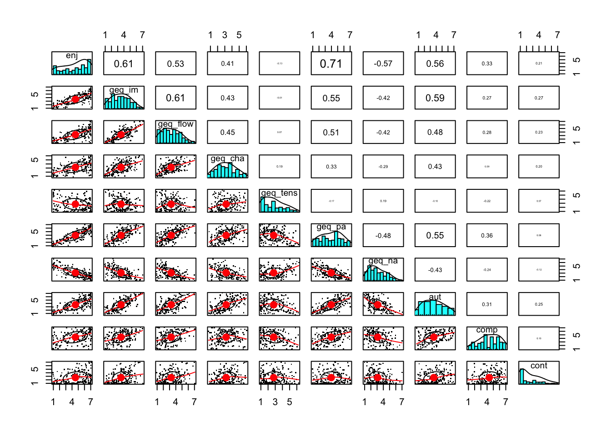

GameLog
Florian Brühlmann
- Mai 2016
Datensatz einlesen
df <- read.csv(file="data_gamelog_anon.csv")
#head(df)Der Datensatz besteht aus allen Items der Fragebögen, sowie den Mittelwerten pro Versuchsperson auf den Skalen des PENS (aut, comp, ppres, epres, npres), den Skalen des GEQ (geq_im, geq_flow, geq_comp, geq_tens, geq_cha, geq_pa, geq_na), der Contemplativness (cont) und dem Enjoyment/Intrinisc Motivation (im). Zusätzlich hat es einen Faktor game mit allen Spielen als Stufen.
# Enjoyment
library(ggplot2)
df$Steamname <- df$ID
means <- aggregate(im ~ game, df, mean)
means$rank <- rank(-means$im)
means## game im rank
## 1 Always Sometimes Monsters 5.571429 2
## 2 Cookie Clicker 3.988095 10
## 3 Depression Quest 3.955556 11
## 4 Duolingo 5.318182 3
## 5 flOw 3.377778 12
## 6 Lieblingsspiel 6.604167 1
## 7 Limbo 4.944444 5
## 8 Lost in Blue 2.611111 13
## 9 So Many Me Demo 4.466667 8
## 10 Super Hot 4.916667 6
## 11 Sweatshop 4.363636 9
## 12 The Stanley Parable Demo 4.833333 7
## 13 VVVVVV 5.238095 4min(df$im)## [1] 1max(df$im)## [1] 7df$game <- factor(df$game, levels = as.character(means[ order(means$rank), "game"]))
ggplot(df,aes(y=im, x=game)) + geom_boxplot() + geom_jitter(aes(color=Steamname), position = position_jitter(width = .2, height = 0), alpha = 0.5) +
scale_y_continuous(name="Enjoyment [1-7]",breaks = seq(1,7, 1), limits = c(1,7)) +
stat_summary(fun.y = "mean", geom = "point", shape= 23, size= 3, fill= "white") +
scale_x_discrete(name="Game") +
theme_bw() + theme(legend.position="none")ggplot(df[df$game %in% levels(df$game)[8:13],],aes(y=im, x=game)) + geom_boxplot() + geom_jitter(aes(color=Steamname), position = position_jitter(width = .2, height = 0), alpha = 0.5) +
scale_y_continuous(name="Enjoyment [1-7]",breaks = seq(1,7, 1), limits = c(1,7)) +
stat_summary(fun.y = "mean", geom = "point", shape= 23, size= 3, fill= "white") +
scale_x_discrete(name="Game") +
theme_bw() + theme(legend.position="none")# Positive affect
means <- aggregate(geq_pa ~ game, df, mean)
means$rank <- rank(-means[,2])
means## game geq_pa rank
## 1 Lieblingsspiel 6.125000 1
## 2 Always Sometimes Monsters 5.028571 2
## 3 Duolingo 4.454545 5
## 4 VVVVVV 4.728571 3
## 5 Limbo 4.053333 7
## 6 Super Hot 3.785714 9
## 7 The Stanley Parable Demo 4.600000 4
## 8 So Many Me Demo 4.360000 6
## 9 Sweatshop 3.654545 10
## 10 Cookie Clicker 4.000000 8
## 11 Depression Quest 2.426667 12
## 12 flOw 3.360000 11
## 13 Lost in Blue 2.300000 13min(df$geq_pa)## [1] 1max(df$geq_pa)## [1] 7df$game <- factor(df$game, levels = as.character(means[ order(means$rank), "game"]))
ggplot(df,aes(y=geq_pa, x=game)) + geom_boxplot() + geom_jitter(aes(color=Steamname), position = position_jitter(width = .2, height = 0), alpha = 0.5) +
scale_y_continuous(name="Positive Affect [1-7]",breaks = seq(1,7, 1), limits = c(1,7)) +
stat_summary(fun.y = "mean", geom = "point", shape= 23, size= 3, fill= "white") +
scale_x_discrete(name="Game") +
theme_bw() + theme(legend.position="none") + theme(axis.text.x = element_text(angle = 45, hjust = 1))# Competence
means <- aggregate(geq_comp ~ game, df, mean)
means$rank <- rank(-means[,2])
means## game geq_comp rank
## 1 Lieblingsspiel 5.025000 2
## 2 Always Sometimes Monsters 4.057143 6
## 3 VVVVVV 4.100000 5
## 4 The Stanley Parable Demo 3.426667 11
## 5 Duolingo 5.036364 1
## 6 So Many Me Demo 3.773333 9
## 7 Limbo 3.746667 10
## 8 Cookie Clicker 4.457143 4
## 9 Super Hot 3.971429 8
## 10 Sweatshop 4.618182 3
## 11 flOw 4.013333 7
## 12 Depression Quest 3.386667 12
## 13 Lost in Blue 2.433333 13min(df$geq_comp)## [1] 1max(df$geq_comp)## [1] 6.8df$game <- factor(df$game, levels = as.character(means[ order(means$rank), "game"]))
ggplot(df,aes(y=geq_comp, x=game)) + geom_boxplot() + geom_jitter(aes(color=Steamname), position = position_jitter(width = .2, height = 0), alpha = 0.5) +
scale_y_continuous(name="Competence [1-7]",breaks = seq(1,7, 1), limits = c(1,7)) +
stat_summary(fun.y = "mean", geom = "point", shape= 23, size= 3, fill= "white") +
scale_x_discrete(name="Game") +
theme_bw() + theme(legend.position="none") + theme(axis.text.x = element_text(angle = 45, hjust = 1))# Challenge
means <- aggregate(geq_cha ~ game, df, mean)
means$rank <- rank(-means[,2])
means## game geq_cha rank
## 1 Duolingo 4.000000 3
## 2 Lieblingsspiel 4.162500 2
## 3 Sweatshop 3.072727 8
## 4 Cookie Clicker 2.000000 13
## 5 VVVVVV 4.414286 1
## 6 Always Sometimes Monsters 3.442857 7
## 7 flOw 2.266667 11
## 8 Super Hot 3.742857 5
## 9 So Many Me Demo 3.773333 4
## 10 Limbo 3.653333 6
## 11 The Stanley Parable Demo 2.400000 10
## 12 Depression Quest 2.853333 9
## 13 Lost in Blue 2.233333 12min(df$geq_cha)## [1] 0.8max(df$geq_cha)## [1] 6.4df$game <- factor(df$game, levels = as.character(means[ order(means$rank), "game"]))
ggplot(df,aes(y=geq_cha, x=game)) + geom_boxplot() + geom_jitter(aes(color=Steamname), position = position_jitter(width = .2, height = 0), alpha = 0.5) +
scale_y_continuous(name="Challenge [1-7]",breaks = seq(1,7, 1), limits = c(1,7)) +
stat_summary(fun.y = "mean", geom = "point", shape= 23, size= 3, fill= "white") +
scale_x_discrete(name="Game") +
theme_bw() + theme(legend.position="none") + theme(axis.text.x = element_text(angle = 45, hjust = 1))## Warning: Removed 1 rows containing non-finite values (stat_boxplot).## Warning: Removed 1 rows containing non-finite values (stat_summary).## Warning: Removed 1 rows containing missing values (geom_point).# Challenge
means <- aggregate(cont ~ game, df, mean)
means$rank <- rank(-means[,2])
means## game cont rank
## 1 VVVVVV 1.714286 12
## 2 Lieblingsspiel 3.343750 5
## 3 Duolingo 3.909091 3
## 4 So Many Me Demo 1.600000 13
## 5 Super Hot 2.089286 7
## 6 Limbo 1.833333 10
## 7 Always Sometimes Monsters 3.732143 4
## 8 Sweatshop 3.954545 2
## 9 Depression Quest 4.683333 1
## 10 The Stanley Parable Demo 2.616667 6
## 11 flOw 1.916667 9
## 12 Lost in Blue 2.000000 8
## 13 Cookie Clicker 1.785714 11min(df$cont)## [1] 1max(df$cont)## [1] 7df$game <- factor(df$game, levels = as.character(means[ order(means$rank), "game"]))
ggplot(df,aes(y=cont, x=game)) + geom_boxplot() + geom_jitter(aes(color=Steamname), position = position_jitter(width = .2, height = 0), alpha = 0.5) +
scale_y_continuous(name="Contemplativeness [1-7]",breaks = seq(1,7, 1), limits = c(1,7)) +
stat_summary(fun.y = "mean", geom = "point", shape= 23, size= 3, fill= "white") +
scale_x_discrete(name="Game") +
theme_bw() + theme(legend.position="none") + theme(axis.text.x = element_text(angle = 45, hjust = 1))ggplot(df, aes(x=geq_cha, y=im)) +
geom_point(aes(color=game), position = "jitter") +
geom_smooth(method=lm, se=F) + # Add a loess smoothed fit curve with confidence region
scale_x_continuous(name="Challenge [1-7]",breaks = seq(1,7, 1), limits = c(0.9,7.1)) +
scale_y_continuous(name="Enjoyment [1-7]",breaks = seq(1,7, 1), limits = c(0.9,7.1)) +
theme_bw() + theme(legend.position="none") + annotate("text", x=1.5, y=7, label="r_t = 0.4", size = 10)## Warning: Removed 1 rows containing non-finite values (stat_smooth).
## Warning: Removed 1 rows containing missing values (geom_point).## Warning: Removed 5 rows containing missing values (geom_smooth).library(psych)##
## Attaching package: 'psych'## Die folgenden Objekte sind maskiert von 'package:ggplot2':
##
## %+%, alphacor.ci(df[,c("im","geq_cha")], method = "kendall")## Call:cor.ci(x = df[, c("im", "geq_cha")], method = "kendall")
##
## Coefficients and bootstrapped confidence intervals
## im gq_ch
## im 1.0
## geq_cha 0.4 1.0
##
## scale correlations and bootstrapped confidence intervals
## lower.emp lower.norm estimate upper.norm upper.emp p
## im-gq_ch 0.33 0.32 0.4 0.47 0.49 0ggplot(df, aes(x=geq_comp, y=im)) +
geom_point(aes(color=game), position = "jitter") +
geom_smooth(method=lm, se=F) + # Add a loess smoothed fit curve with confidence region
scale_x_continuous(name="Competence [1-7]",breaks = seq(1,7, 1), limits = c(0.9,7.1)) +
scale_y_continuous(name="Enjoyment [1-7]",breaks = seq(1,7, 1), limits = c(0.9,7.1)) +
theme_bw() + theme(legend.position="none") + annotate("text", x=1.5, y=7, label="r_t = 0.37", size = 10)cor.ci(df[,c("im","geq_comp")], method = "kendall")## Call:cor.ci(x = df[, c("im", "geq_comp")], method = "kendall")
##
## Coefficients and bootstrapped confidence intervals
## im gq_cm
## im 1.00
## geq_comp 0.37 1.00
##
## scale correlations and bootstrapped confidence intervals
## lower.emp lower.norm estimate upper.norm upper.emp p
## im-gq_cm 0.27 0.26 0.37 0.46 0.45 0df <- df[df$game != "Lieblingsspiel",]
ggplot(df[df$game != "Lieblingsspiel",], aes(x=cont, y=im)) +
geom_point(aes(color=game), position = "jitter") +
geom_smooth(method=lm, se=F) + # Add a loess smoothed fit curve with confidence region
scale_x_continuous(name="Contemplativeness [1-7]",breaks = seq(1,7, 1), limits = c(0.9,7.1)) +
scale_y_continuous(name="Enjoyment [1-7]",breaks = seq(1,7, 1), limits = c(0.9,7.1)) +
theme_bw() + theme(legend.position="none") + annotate("text", x=1.5, y=7, label="r_t = 0.21", size = 10)cor.ci(df[,c("im","cont")], method = "kendall")## Call:cor.ci(x = df[, c("im", "cont")], method = "kendall")
##
## Coefficients and bootstrapped confidence intervals
## im cont
## im 1.00
## cont 0.21 1.00
##
## scale correlations and bootstrapped confidence intervals
## lower.emp lower.norm estimate upper.norm upper.emp p
## im-cont 0.07 0.09 0.21 0.31 0.29 0d.cor <- df[,c("im","geq_im","geq_flow","geq_cha", "geq_tens", "geq_pa", "geq_na", "aut", "comp", "cont")]
names(d.cor) <- c("enj","geq_im","geq_flow","geq_cha", "geq_tens", "geq_pa", "geq_na", "aut", "comp", "cont")
cor.ci(d.cor, method = "kendall")## Call:cor.ci(x = d.cor, method = "kendall")
##
## Coefficients and bootstrapped confidence intervals
## enj geq_m gq_fl gq_ch gq_tn geq_p geq_n aut comp cont
## enj 1.00
## geq_im 0.61 1.00
## geq_flow 0.53 0.61 1.00
## geq_cha 0.41 0.43 0.45 1.00
## geq_tens -0.13 -0.01 0.07 0.19 1.00
## geq_pa 0.71 0.55 0.51 0.33 -0.17 1.00
## geq_na -0.57 -0.42 -0.42 -0.29 0.19 -0.48 1.00
## aut 0.56 0.59 0.48 0.43 -0.10 0.55 -0.43 1.00
## comp 0.33 0.27 0.28 0.09 -0.22 0.36 -0.24 0.31 1.00
## cont 0.21 0.27 0.23 0.20 0.07 0.08 -0.12 0.25 0.10 1.00
##
## scale correlations and bootstrapped confidence intervals
## lower.emp lower.norm estimate upper.norm upper.emp p
## enj-geq_m 0.53 0.52 0.61 0.68 0.68 0.00
## enj-gq_fl 0.44 0.43 0.53 0.62 0.61 0.00
## enj-gq_ch 0.33 0.32 0.41 0.48 0.48 0.00
## enj-gq_tn -0.25 -0.25 -0.13 -0.02 -0.02 0.02
## enj-geq_p 0.66 0.65 0.71 0.76 0.76 0.00
## enj-geq_n -0.65 -0.65 -0.57 -0.50 -0.50 0.00
## enj-aut 0.49 0.48 0.56 0.62 0.61 0.00
## enj-comp 0.21 0.20 0.33 0.43 0.42 0.00
## enj-cont 0.12 0.11 0.21 0.30 0.31 0.00
## geq_m-gq_fl 0.54 0.53 0.61 0.68 0.68 0.00
## geq_m-gq_ch 0.36 0.35 0.43 0.51 0.51 0.00
## geq_m-gq_tn -0.13 -0.13 -0.01 0.10 0.09 0.79
## geq_m-geq_p 0.47 0.47 0.55 0.61 0.61 0.00
## geq_m-geq_n -0.50 -0.51 -0.42 -0.31 -0.30 0.00
## geq_m-aut 0.54 0.53 0.59 0.65 0.66 0.00
## geq_m-comp 0.17 0.16 0.27 0.37 0.36 0.00
## geq_m-cont 0.17 0.16 0.27 0.38 0.37 0.00
## gq_fl-gq_ch 0.37 0.36 0.45 0.54 0.54 0.00
## gq_fl-gq_tn -0.05 -0.06 0.07 0.19 0.19 0.29
## gq_fl-geq_p 0.43 0.42 0.51 0.59 0.59 0.00
## gq_fl-geq_n -0.52 -0.52 -0.42 -0.32 -0.33 0.00
## gq_fl-aut 0.40 0.40 0.48 0.55 0.55 0.00
## gq_fl-comp 0.16 0.16 0.28 0.37 0.36 0.00
## gq_fl-cont 0.13 0.12 0.23 0.33 0.32 0.00
## gq_ch-gq_tn 0.07 0.07 0.19 0.31 0.31 0.00
## gq_ch-geq_p 0.25 0.24 0.33 0.42 0.42 0.00
## gq_ch-geq_n -0.39 -0.39 -0.29 -0.19 -0.20 0.00
## gq_ch-aut 0.34 0.34 0.43 0.51 0.52 0.00
## gq_ch-comp -0.01 -0.04 0.09 0.21 0.21 0.18
## gq_ch-cont 0.10 0.09 0.20 0.30 0.29 0.00
## gq_tn-geq_p -0.27 -0.28 -0.17 -0.06 -0.06 0.00
## gq_tn-geq_n 0.10 0.09 0.19 0.30 0.29 0.00
## gq_tn-aut -0.22 -0.22 -0.10 0.01 0.03 0.08
## gq_tn-comp -0.34 -0.35 -0.22 -0.10 -0.08 0.00
## gq_tn-cont -0.06 -0.06 0.07 0.17 0.16 0.33
## geq_p-geq_n -0.56 -0.57 -0.48 -0.40 -0.39 0.00
## geq_p-aut 0.48 0.48 0.55 0.62 0.61 0.00
## geq_p-comp 0.26 0.25 0.36 0.46 0.45 0.00
## geq_p-cont -0.01 -0.01 0.08 0.18 0.18 0.08
## geq_n-aut -0.51 -0.52 -0.43 -0.34 -0.33 0.00
## geq_n-comp -0.33 -0.34 -0.24 -0.12 -0.14 0.00
## geq_n-cont -0.23 -0.22 -0.12 -0.01 -0.03 0.03
## aut-comp 0.19 0.20 0.31 0.40 0.39 0.00
## aut-cont 0.11 0.13 0.25 0.35 0.33 0.00
## comp-cont -0.03 -0.03 0.10 0.23 0.22 0.13pairs.panels(d.cor,pch=".", method = "kendall", jiggle=TRUE, scale=TRUE)
Depression Quest only
dat <- df[df$game=="Depression Quest",c("im","aut","comp","geq_na","geq_tens","cont")]
names(dat) <- c("Enjoy","Aut","Comp","NegA","Tension","Contem")
cor.ci(dat, method="kendall")## Call:cor.ci(x = dat, method = "kendall")
##
## Coefficients and bootstrapped confidence intervals
## Enjoy Aut Comp NegA Tensn Contm
## Enjoy 1.00
## Aut 0.49 1.00
## Comp 0.38 0.31 1.00
## NegA -0.36 -0.17 -0.26 1.00
## Tension 0.06 -0.02 -0.13 -0.15 1.00
## Contem 0.62 0.31 0.29 -0.15 0.28 1.00
##
## scale correlations and bootstrapped confidence intervals
## lower.emp lower.norm estimate upper.norm upper.emp p
## Enjoy-Aut 0.11 0.06 0.49 0.77 0.78 0.05
## Enjoy-Comp -0.18 -0.20 0.38 0.78 0.82 0.21
## Enjoy-NegA -0.78 -0.75 -0.36 0.13 0.11 0.16
## Enjoy-Tensn -0.39 -0.38 0.06 0.51 0.42 0.73
## Enjoy-Contm 0.39 0.39 0.62 0.78 0.79 0.00
## Aut-Comp -0.09 -0.12 0.31 0.66 0.69 0.16
## Aut-NegA -0.63 -0.61 -0.17 0.31 0.26 0.46
## Aut-Tensn -0.49 -0.50 -0.02 0.50 0.44 0.99
## Aut-Contm -0.19 -0.20 0.31 0.67 0.70 0.25
## Comp-NegA -0.70 -0.67 -0.26 0.29 0.25 0.37
## Comp-Tensn -0.59 -0.56 -0.13 0.32 0.24 0.55
## Comp-Contm -0.11 -0.18 0.29 0.69 0.69 0.22
## NegA-Tensn -0.47 -0.49 -0.15 0.19 0.21 0.36
## NegA-Contm -0.52 -0.56 -0.15 0.28 0.27 0.46
## Tensn-Contm -0.15 -0.24 0.28 0.72 0.76 0.28pairs.panels(dat,pch=".", method = "kendall", jiggle=TRUE, scale=TRUE)
Spider Plots
# spider diagram with r
library(fmsb)
maxmin <- data.frame(
im=c(7, 1),
aut=c(7, 1),
comp=c(7, 1),
geq_cha=c(7, 1),
geq_na=c(7, 1),
cont=c(7, 1))
#dat <- rbind(maxmin,dat)
dat <- df[,c("game","im", "aut", "comp", "geq_cha", "geq_na", "cont")]
means <- aggregate(im ~ game, dat, mean)
dat$game <- factor(dat$game, levels = as.character(means[ order(means$im, decreasing = T), "game"]))
op <- par(mar=c(1, 2, 2, 1),mfrow=c(4, 4))
for (i in levels(dat$game)) {
dat.o <- rbind(maxmin, colMeans(dat[dat$game == i,-1]))
dat.o <- rbind(dat.o, colMeans(dat[2:7]))
names(dat.o) <- c("Enjoy", "Aut", "Comp", "Chal", "NegA", "Contem")
radarchart(dat.o, axistype=1, plwd=1:2, pcol=c(rainbow(c(1)),"#6b6b6b"), centerzero=F,
seg=6, caxislabels=c(1:7),
title=i)
}